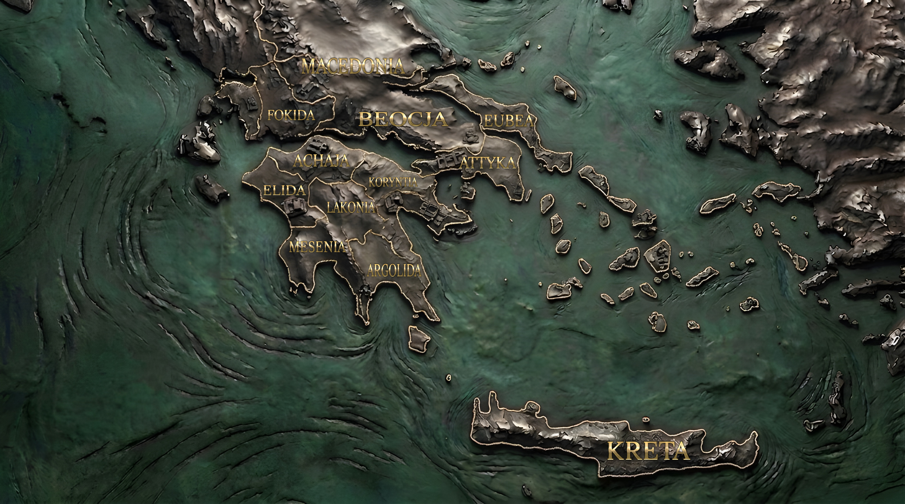
Mapa autorstwa Anaksymandera z Miletu (VI w. p.n.e.). Ze względu na wczesny okres powstania, odwzorowanie geograficzne jest wysoce symboliczne i niedokładne.
Główne regiony
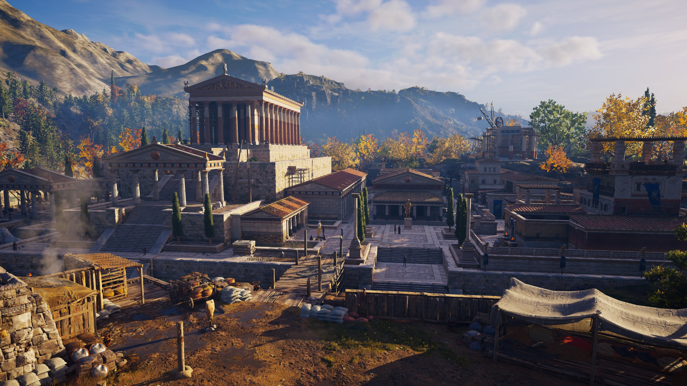
Wizualizacja przedstawiająca Pellę
Macedonia
W starożytności była krainą, która z peryferyjnego, górzystego królestwa na północy wyrosła na światowe imperium, zmieniając na zawsze losy Hellady. W przeciwieństwie do klasycznych greckich polis, które stawiały na demokrację czy surową oligarchię, Macedonia była rządzona przez silną władzę królewską, co pozwalało jej na prowadzenie agresywnej polityki podbojów. Grecy z południa długo uważali Macedończyków za półdzikich, dopóki Filip II, a później jego syn Aleksander Wielki, nie udowodnili swojej militarnej potęgi. Sercem państwa była Pella, położona na nizinie nad Zatoką Termajską, która dzięki dostępności morza stała się wielkim centrum politycznym i handlowym. Miasto słynęło z ogromnego przepychu, wspaniałych pałaców i zaawansowanych rozwiązań urbanistycznych, mających imponować przybyszom z bardziej tradycyjnych miast-państw. To właśnie w Pelli w kunsztownych mozaikach uwieczniono sceny polowań i mitologii, a na królewskim dworze wiedzę zdobywał młody Aleksander Wielki pod okiem samego Arystotelesa. Pella była symbolem ambicji królestwa, które z każdym rokiem przesuwało swoje granice, przekształcając się z regionalnego gracza w superpotęgę epoki hellenistycznej.
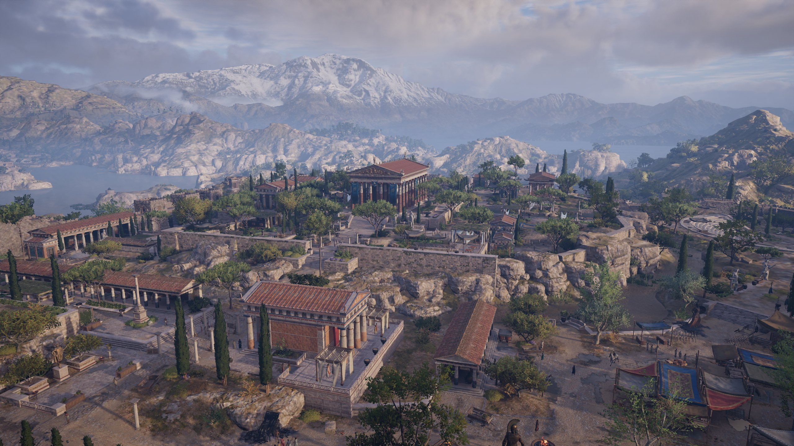
Wizualizacja przedstawiająca Teby
Beocja
W starożytności niezwykle ważnym, a często niedocenianym regionem Grecji Środkowej, który stanowił polityczną przeciwwagę dla dominacji Aten i Sparty. Kraina ta, zamknięta w naturalnym pierścieniu gór, charakteryzowała się wybitnie rolniczym charakterem oraz rozbudowaną siecią miast z Tebami na czele. Beoci słynęli z uporu i silnego przywiązania do tradycji, co w połączeniu z ich doskonałymi warunkami terenowymi przekładało się na niezwykle skuteczną siłę militarną. To właśnie w Beocji wypracowano innowacyjną taktykę tzw. ukośnego szyku, która w bitwie pod Leuktrami pozwoliła tebańskiej armii ostatecznie przełamać mit o niezwyciężoności spartańskich hoplitów. Sercem i głównym ośrodkiem politycznym były Teby, miasto o potężnych murach i bogatej mitologii, które w IV wieku p.n.e. na krótko przejęło hegemonię nad całym światem greckim. Teby słynęły również z tzw. Świętego Zastępu, elitarnego oddziału składającego się ze 150 par kochanków, których wzajemna lojalność czyniła z nich jedną z najbardziej przerażających jednostek na ówczesnych polach bitew. Region ten, choć często postrzegany przez mieszkańców Attyki przez pryzmat stereotypów o rzekomej ciężkości umysłu Beotów, w rzeczywistości był kolebką genialnych strategów oraz poetów, a jego położenie na szlaku między północą a południem Grecji czyniło z niego teren nieustannych ścierań wielkiej polityki.
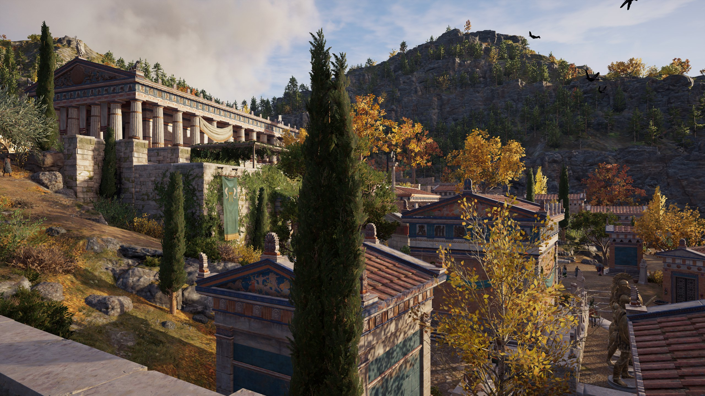
Wizualizacja przedstawiająca Delfy i świątynię Apollina
Fokida
To górzysty region w sercu Grecji Środkowej, który ze względu na swoje surowe ukształtowanie terenu i położenie przy głównych szlakach komunikacyjnych odegrał w historii Hellady rolę kluczową, wykraczającą daleko poza jego niewielki rozmiar. Kraina ta była naturalną fortecą, w której pasma górskie, w tym potężny masyw Parnasu, skutecznie utrudniały dostęp do wnętrza kraju, co stanowiło istotną barierę dla armii najeźdźców. Najważniejszym punktem Fokidy, który nadawał jej znaczenie ogólnogreckie, były Delfy, gdzie znajdowała się najsłynniejsza wyrocznia świata antycznego. To właśnie tam, w świątyni Apollina, kapłanka Pytia przekazywała przepowiednie, które kształtowały decyzje królów, wodzów i kolonizatorów, czyniąc z Fokidy miejsce o wyjątkowej randze duchowej i politycznej. Stała obecność pielgrzymów oraz darów wotywnych z całego świata greckiego sprawiała, że region ten, choć sam w sobie skromny gospodarczo, był nieustannie w centrum uwagi wielkich mocarstw, które za wszelką cenę chciały kontrolować dostęp do delfickiej wyroczni. Historia Fokidy to w dużej mierze historia walk o utrzymanie niezależności tego sanktuarium, co prowadziło do licznych konfliktów, nazywanych wojnami świętymi. Mieszkańcy Fokidy, hartowani przez życie w trudnym, wysokogórskim środowisku, byli ludźmi wytrwałymi i dobrze zaznajomionymi z obroną swoich stromych przełęczy, co wielokrotnie wykorzystywali, by odpierać ataki silniejszych sąsiadów dążących do dominacji nad świętym okręgiem.
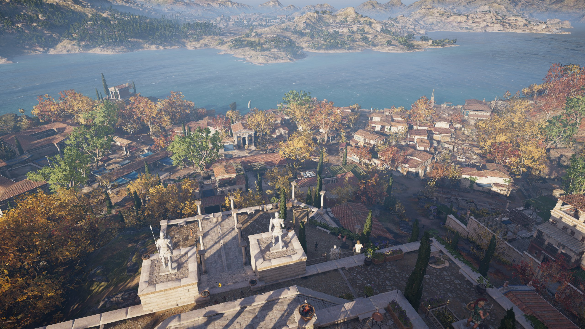
Wizualizacja przedstawiająca Chalkis (Stolica Eubei)
Sporady Północne
Sporady Północne stanowiły strategiczny archipelag rozciągający się wzdłuż wschodniego wybrzeża Grecji, odgrywając istotną rolę w kontroli morskich szlaków prowadzących ku Tracji i Hellespontowi. W skład tej grupy wysp wchodziły obok Eubei także Skiros, Lemnos oraz Tazos, z których każda pełniła ważne funkcje w greckiej sieci handlowej i militarnej. Podczas gdy większa Eubea była kluczowym ośrodkiem dzięki swoim zasobom metali oraz potężnym miastom takim jak Chalkis i Eretria, mniejsze wyspy archipelagu służyły jako dogodne bazy wypadowe i punkty zaopatrzeniowe dla żeglarzy. Cały ten region był niezwykle cenny pod względem gospodarczym, a jego mieszkańcy, słynący z biegłości w żegludze oraz rozwiniętej kultury, aktywnie uczestniczyli w skomplikowanej polityce antycznej Hellady, łącząc północne tereny z resztą greckiego świata.
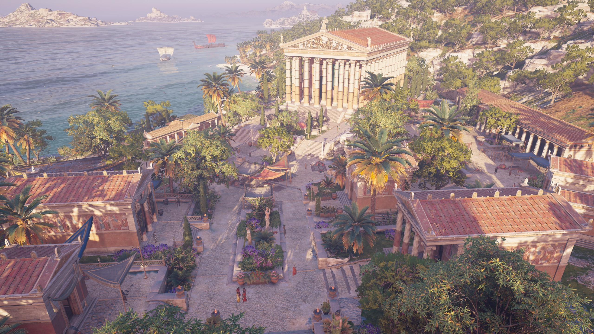
Wizualizacja przedstawiająca Samos (Stolica Samos)
Sporady Południowe (Dodekanez)
Sporady Południowe, znane również jako Dodekanez, stanowiły kluczowy pomost między Grecją właściwą a wybrzeżami Azji Mniejszej. Wyspy te, w tym szczególnie Samos i Kos, pełniły funkcję strategicznych centrów handlowych, dzięki którym wymiana towarów, idei oraz technologii między Helladą a bogatymi krainami Wschodu była niezwykle ożywiona. Ich położenie sprawiało, że stały się one nie tylko punktami przeładunkowymi dla kupców, ale również ośrodkami o wysokim poziomie kultury, gdzie grecka myśl ścierała się z wpływami wschodnimi, tworząc unikalną mieszankę obyczajów. Dzięki naturalnie osłoniętym portom oraz dostępowi do cennych zasobów, wyspy te odgrywały znaczącą rolę w politycznych rozgrywkach między greckimi polis a potęgami azjatyckimi, często stając się obiektem rywalizacji o kontrolę nad morskimi szlakami południowego Morza Egejskiego.
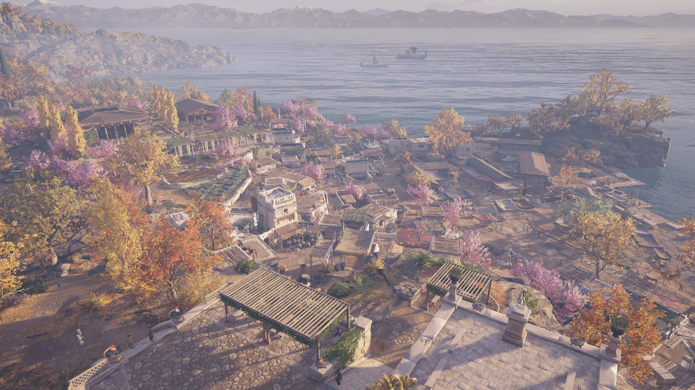
Wizualizacja przedstawiająca Lesbos (Stolica Lesbos)
Wyspy Wschodnie
Wyspy wschodnie, położone bezpośrednio przy wybrzeżach Azji Mniejszej, stanowiły naturalne pomosty komunikacyjne oraz gospodarcze między Grecją a bogatymi krainami Wschodu. Najważniejszymi ośrodkami tego regionu były Lesbos oraz Chios, które dzięki doskonałej lokalizacji zdominowały handel morski w tej części Morza Egejskiego. Lesbos, z potężną Mityleną jako głównym polis, słynęła nie tylko z bogactwa i wpływów politycznych, ale także z rozbudowanej architektury publicznej, w tym monumentalnych teatrów, które pełniły funkcję centrów życia społecznego i kulturalnego. Chios natomiast, dzięki swojemu strategicznemu położeniu i żyznym glebom, stało się jednym z najbogatszych miast-państw, odgrywającym istotną rolę w systemie sojuszy morskich. Wyspy te, będąc punktami styku dwóch różnych światów, były niezwykle dynamiczne gospodarczo, często stając się obiektem rywalizacji między greckimi polis a potęgami azjatyckimi o kontrolę nad kluczowymi szlakami żeglugowymi. Ich mieszkańcy, łącząc grecką myśl polityczną z wpływami wschodnimi, stworzyli unikalną kulturę, która wywarła znaczący wpływ na rozwój całego antycznego świata.
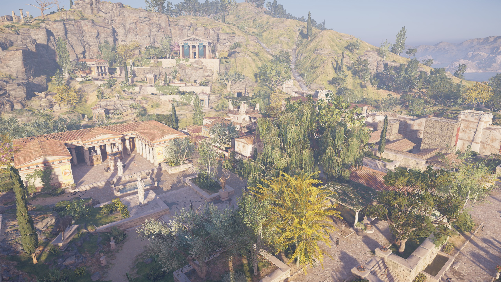
Wizualizacja przedstawiająca Megarę (Stolica Megaris)
Megaris
Megaris było niewielkim, ale niezwykle istotnym regionem Grecji Środkowej, położonym strategicznie pomiędzy Attyką a Peloponezem. Dzięki swojemu położeniu przy Przesmyku Korynckim, region ten kontrolował kluczowe szlaki lądowe łączące Grecję Północną z południem, co czyniło go ciągłym obiektem sporów między silniejszymi sąsiadami, zwłaszcza Atenami, Koryntem i Tebami. Głównym ośrodkiem politycznym było miasto Megara, które słynęło z zaradności swoich mieszkańców, rozwijających handel i zakładających własne kolonie, takie jak Bizancjum czy Chalcedon. Choć teren był dość górzysty i niezbyt żyzny, Megaris pełniło funkcję swoistej bramy – każdy, kto chciał swobodnie przemieszczać się między najważniejszymi greckimi polis, musiał liczyć się z wpływami tego regionu. To właśnie ta lokalizacja sprawiła, że Megaris często znajdowało się w centrum wielkiej polityki, będąc ważnym elementem w systemie sojuszy i konfliktów antycznej Hellady.
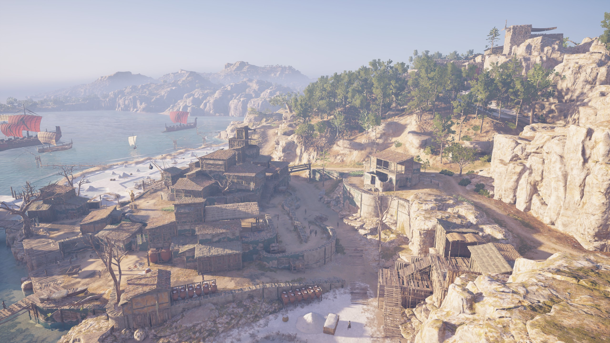
Wizualizacja przedstawiająca kopalnię marmuru w Lokrydzie Opunckiej
Lokryda
Lokryda była dość specyficznym regionem, bo składała się z dwóch oddzielonych od siebie terytoriów położonych w Grecji Środkowej. Mamy tutaj Lokrydę Opuncką, która rozciągała się wzdłuż wybrzeża nad zatoką Eubejską, oraz Lokrydę Ozolską, leżącą dalej na zachód, nad zatoką Koryncką. Geograficznie teren ten był dość górzysty i trudny, co wpływało na to, że mieszkańcy skupiali się głównie w mniejszych ośrodkach przybrzeżnych. Ze względu na swoje położenie, Lokryda często służyła jako naturalna strefa tranzytowa dla wojsk przemieszczających się między północą a południem Grecji. Mimo że region ten rzadko dominował samodzielnie w wielkiej polityce, to ze względu na dostęp do wybrzeży odgrywał istotną rolę w lokalnym handlu morskim i zabezpieczaniu szlaków komunikacyjnych w tym ważnym strategicznie pasie ziemi.
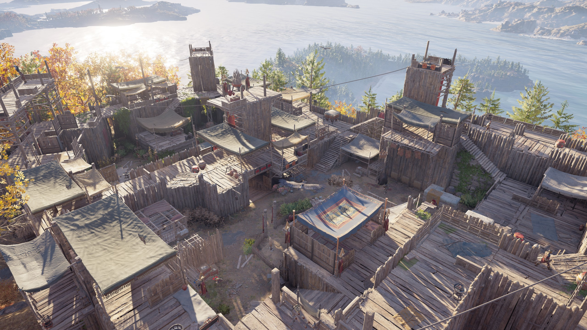
Wizualizacja przedstawiająca Twierdzę Trachis
Malis
Malis to niewielki, lecz niezwykle istotny strategicznie region w środkowej Grecji, położony wokół zatoki Malijskiej. Jego najważniejszym elementem był słynny wąwóz Termopile, który stanowił kluczowe przejście lądowe między Grecją Północną a resztą kraju. To wąskie gardło decydowało o militarnym znaczeniu całego regionu – każda armia maszerująca z północy musiała kontrolować Malis, aby bezpiecznie przejść dalej. Teren ten był górzysty i trudny, co sprawiało, że lokalne społeczności żyły w cieniu najważniejszych szlaków komunikacyjnych, często pełniąc funkcję strażników tych strategicznych przejść. Mimo niewielkich rozmiarów, Malis było miejscem, w którym ważyły się losy wielkich konfliktów, właśnie ze względu na swoje unikalne położenie geograficzne.
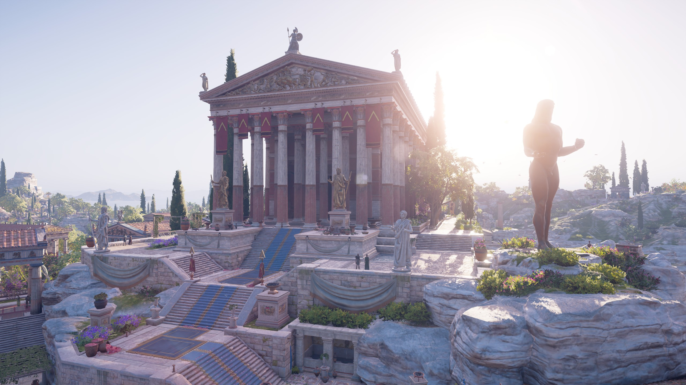
Wizualizacja przedstawiająca Sanktuarium Apollina (Delos)
Cyklady
Cyklady, położone w samym sercu Morza Egejskiego, stanowiły najważniejszy i najbardziej charakterystyczny archipelag antycznego świata greckiego. Ich nazwa, pochodząca od słowa oznaczającego „krąg”, odnosiła się do ułożenia wysp wokół świętej wyspy Delos, która pełniła funkcję religijnego i politycznego centrum regionu, przyciągając pielgrzymów i kupców z całej Hellady. Archipelag ten, obejmujący takie kluczowe ośrodki jak Naksos, Paros, Keos, Serifos czy Melos, był niezwykle ważny ze względów ekonomicznych – to właśnie stąd pochodził słynny marmur oraz liczne bogactwa naturalne, które napędzały rozwój greckiej architektury i handlu. Dzięki centralnemu położeniu Cyklady funkcjonowały jako kluczowy węzeł komunikacyjny, łączący Grecję właściwą z wyspami wschodnimi i Azją Mniejszą. Choć poszczególne wyspy często rywalizowały ze sobą o wpływy, ich mieszkańcy stworzyli unikalną kulturę morską, która od wieków stanowiła fundament potęgi greckich flot i była nieodłącznym elementem skomplikowanych sojuszy politycznych tamtego okresu.
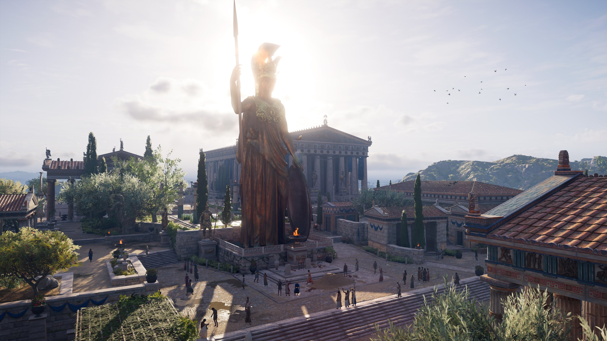
Wizualizacja przedstawiająca Akropol Ateński
Attyka
To bezsprzecznie najważniejszy region w historii starożytnej Grecji, stanowiący niemal synonim greckiej kultury, demokracji oraz potęgi morskiej. Kraina ta, uformowana w kształt skalistego półwyspu wcinającego się w wody Morza Egejskiego, odznaczała się dość ubogą glebą, co wymusiło na jej mieszkańcach zwrot ku morzu, handlowi oraz rzemiosłu, zamiast tradycyjnemu rolnictwu. Sercem i dominującym ośrodkiem były Ateny, które dzięki genialnym reformom politycznym przekształciły się w kolebkę systemu demokratycznego, dając obywatelom realny wpływ na losy swojego państwa. Attyka stała się również centrum intelektualnym świata antycznego, przyciągając najwybitniejszych filozofów, dramaturgów i artystów, których prace do dziś stanowią fundament europejskiej cywilizacji. W czasach swojej największej świetności, szczególnie po zwycięstwach nad Persami, Attyka zbudowała potężną flotę wojenną, dzięki której kontrolowała ogromny związek państw sprzymierzonych, gromadząc w Atenach ogromne bogactwa przeznaczane na monumentalną architekturę, w tym na słynny Akropol z Partenonem na czele. Mieszkańcy tego regionu, znani z pewnej pewności siebie i zamiłowania do dyskusji, nie tylko zdominowali życie polityczne Hellady, ale także narzucili swój dialekt i wzorce kulturowe większości świata greckiego. To właśnie tutaj, w cieniu oliwnych gajów i na skraju wybrzeża, ścierały się idee wolności obywatelskiej z imperialnymi ambicjami, co sprawiło, że Attyka na zawsze zapisała się w historii jako miejsce narodzin nowoczesnego myślenia o państwie i jednostce.
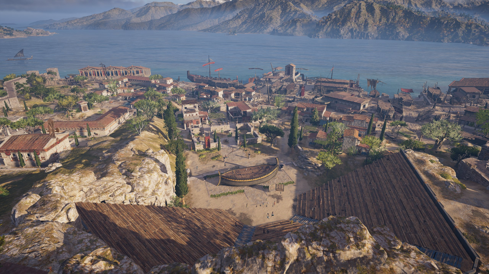
Wizualizacja przedstawiająca Patrai
Achaja
To historyczny region położony na północnym wybrzeżu Peloponezu, rozciągający się wąskim pasem wzdłuż Zatoki Korynckiej, który w dziejach Grecji zapisał się przede wszystkim jako kolebka jednej z najbardziej trwałych i znaczących federacji antycznego świata. Teren ten, charakteryzujący się stromymi zboczami opadającymi ku morzu oraz licznymi dolinami rzecznymi, nie posiadał nigdy tak potężnych czy niezależnych polis jak Ateny czy Sparta, co skłoniło jego mieszkańców do szukania siły w ścisłej współpracy i zjednoczeniu. Największe znaczenie region ten zyskał w okresie hellenistycznym, kiedy to powstał Związek Achajski – prekursorski projekt polityczny, w którym suwerenne miasta-państwa dobrowolnie zrzekły się części swojej niezależności na rzecz wspólnej polityki obronnej, jednolitej waluty i sprawnego systemu prawnego. Achajowie, znani z zamiłowania do porządku i rozważnego działania, stworzyli strukturę, która przez długi czas skutecznie opierała się wpływom macedońskim, a później rzymskim, stając się ostatnim bastionem greckiej wolności przed ostatecznym podbojem przez imperium. Choć głównymi ośrodkami były mniejsze miasta, takie jak Patrai czy Aigion, siła Achai nie tkwiła w pojedynczym, monumentalnym centrum, lecz w idei federacyjnej, która pozwalała słabszym podmiotom na zachowanie podmiotowości w świecie zdominowanym przez wielkie imperia. Dla współczesnego obserwatora historia Achai jest fascynującą lekcją o tym, jak skutecznie zarządzać wspólnotą w trudnych warunkach geograficznych i politycznych, stawiając na kompromis oraz wspólny interes zamiast na wyniszczającą rywalizację.
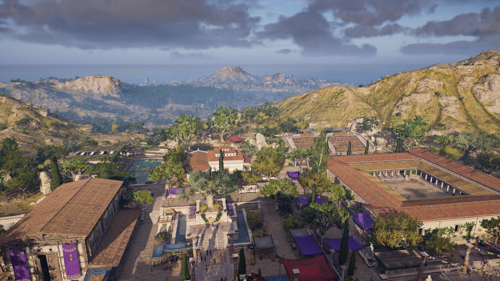
Wizualizacja przedstawiająca Olimpię
Elida
To żyzna kraina położona na zachodnim wybrzeżu Peloponezu, która w starożytności pełniła niezwykle ważną, niemal sakralną rolę w życiu wszystkich Greków, niezależnie od ich lokalnych animozji czy wojen. Region ten, obdarzony przez naturę łagodniejszym klimatem i rozległymi nizinami, był idealnym miejscem pod uprawę roli oraz hodowlę zwierząt, co od wieków zapewniało jej mieszkańcom stabilny byt. Sławę na skalę całego świata greckiego przyniosło Elidzie przede wszystkim położone na jej terenie sanktuarium w Olimpii, które stało się miejscem narodzin najsłynniejszych igrzysk antycznych. Dzięki statusowi świętego okręgu, teren ten był objęty tzw. ekecheirią, czyli świętym rozejmem, który gwarantował bezpieczeństwo wszystkim przybywającym sportowcom i pielgrzymom, nawet w czasach najbardziej zażartych konfliktów między polis. Choć Elida nie posiadała militarnego znaczenia na miarę Sparty czy Aten, to właśnie jej mieszkańcy, jako gospodarze i organizatorzy olimpijskich zawodów, cieszyli się ogromnym autorytetem, dbając o czystość rytuałów i sprawiedliwe sędziowanie rywalizacji. Miasto Elida, stolica tego regionu, tętniło życiem głównie w kontekście przygotowań do igrzysk, stając się centrum zarządzania jedną z najważniejszych idei antyku, która łączyła Greków poprzez sportową rywalizację i kult bogów. Historia tej krainy pokazuje, jak unikalne położenie geograficzne w połączeniu z religijną misją mogło wynieść region do rangi centrum, w którym na kilka dni w roku milkły oręża, a liczyła się tylko sprawność, honor i dążenie do doskonałości.
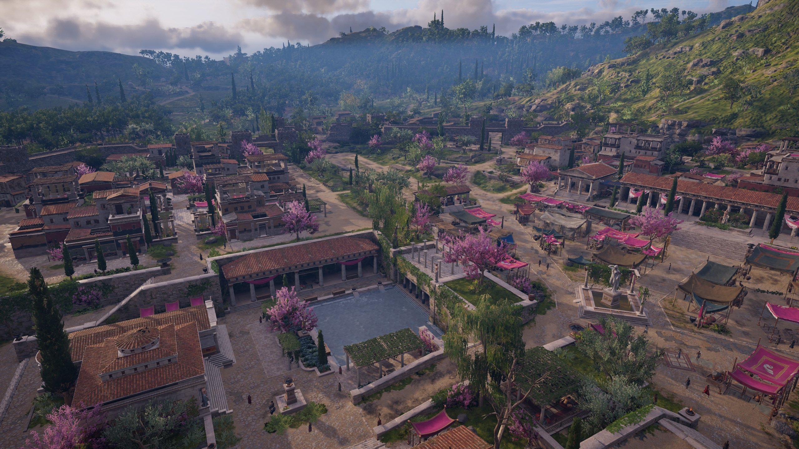
Wizualizacja przedstawiająca Korynt
Koryncja
To strategicznie położony region na przesmyku łączącym Peloponez z resztą Grecji, który dzięki swojemu unikalnemu położeniu stał się jednym z najbogatszych i najbardziej wpływowych ośrodków handlowych w całym antycznym świecie. Kraina ta, będąca naturalną bramą między wschodem a zachodem, kontrolowała dostęp do dwóch mórz, co pozwalało jej mieszkańcom czerpać ogromne zyski z przeładunku towarów oraz pobierania opłat od statków przeprawianych przez wąski pas lądu. Sercem regionu był Korynt, miasto słynące z niewyobrażalnego jak na tamte czasy luksusu, które dzięki swojej fortunie stało się centrum rzemiosła, wyrafinowanej architektury oraz bujnego życia towarzyskiego. Koryntianie, znani ze swojego pragmatycznego podejścia do biznesu i zamiłowania do innowacji, opracowali system diolkos, czyli specjalną drogę wyłożoną kamiennymi płytami, po której statki były przeciągane na wózkach przez przesmyk, co stanowiło inżynieryjny majstersztyk tamtej epoki. Choć region ten często balansował między politycznymi wpływami potężniejszych sąsiadów, to właśnie dzięki swoim portom, Kenchreai i Lechaion, Koryncja utrzymywała niezależność i status gospodarczego giganta. Miasto było również ośrodkiem kultu bogini Afrodyty, co przydawało mu atmosfery kosmopolitycznej swobody, odróżniającej go od surowszych polis, takich jak Sparta czy Teby. Historia Koryntii to fascynujący przykład tego, jak jeden punkt geograficzny, dzięki odwadze w wykorzystywaniu szans, może stać się sercem wymiany towarów i idei, definiującym sposób funkcjonowania handlu w starożytności.
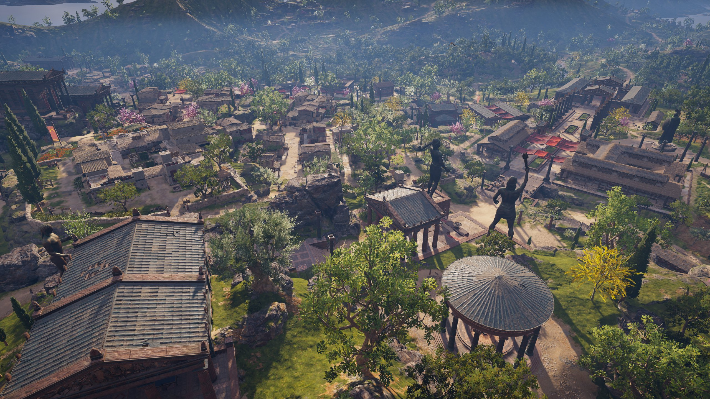
Wizualizacja przedstawiająca Spartę
Lakonia
To południowo-wschodni cypel Peloponezu, który w starożytności stał się synonimem militarnej potęgi, surowego wychowania i niezłomnej dyscypliny, zdominowanej przez jedno z najważniejszych polis świata greckiego – Spartę. Region ten, zamknięty między wysokimi pasmami górskimi Tajgetu a wodami Morza Egejskiego, stanowił naturalną twierdzę, która przez wieki pozwalała Spartiatom na utrzymanie pełnej kontroli nad swoimi posiadłościami bez konieczności budowania murów obronnych. Sercem Lakonii była Sparta, miasto, które w odróżnieniu od bogatych i rozbudowanych Aten, stawiało na ascetyczny styl życia, gdzie jednostka była całkowicie podporządkowana potrzebom państwa i armii. Spartanie, dzięki unikalnemu systemowi wychowania zwanemu agoge, wykształcili elitarną klasę wojowników, których słynna lakoniczna mowa – krótka, konkretna i pozbawiona zbędnych ozdobników – stała się odbiciem ich charakteru. Żyzne doliny rzeki Eurotas, uprawiane przez ludność podbitą, czyli helotów, zapewniały Spartiatom zaplecze żywnościowe, dzięki czemu mogli oni całkowicie poświęcić się rzemiosłu wojennemu, czyniąc ze swojej armii najskuteczniejszą siłę lądową ówczesnej Grecji. Historia Lakonii to opowieść o państwie, które świadomie odrzuciło komfort na rzecz przetrwania i dominacji, budując swoją legendę na fundamencie żelaznej dyscypliny i poświęcenia.
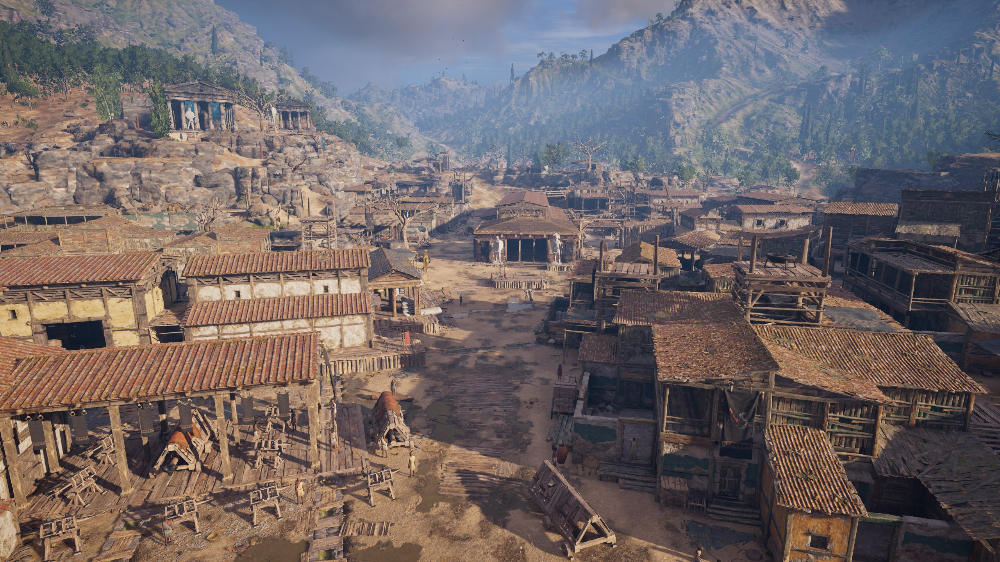
Wizualizacja przedstawiająca Mesenię
Mesenia
To niezwykle żyzny i malowniczy region w południowo-zachodniej części Peloponezu, który przez stulecia pozostawał obiektem pożądania swoich potężnych sąsiadów, zwłaszcza Sparty. Kraina ta, odizolowana od Lakonii przez wysokie i trudne do przebycia pasmo gór Tajgetu, cieszyła się łagodnym klimatem oraz obfitością wody, co czyniło ją spichlerzem Peloponezu i jednym z najbardziej atrakcyjnych terenów rolniczych w całej Grecji. Historia Mesenii była w dużej mierze naznaczona długotrwałą walką o wolność, gdyż w okresie archaicznym została ona podbita przez Spartan, a jej rdzenna ludność została zredukowana do stanu helotów, zmuszonych do niewolniczej pracy na rzecz swoich panów. Przez pokolenia Meseńczycy znosili jarzmo spartańskiej dominacji, wielokrotnie wzniecając powstania, z których najbardziej znane było to z ośrodkiem w twierdzy na górze Ithome, stanowiącej naturalny i niemal niezdobyty punkt oporu. Dopiero w IV wieku p.n.e., dzięki klęsce Sparty w bitwie pod Leuktrami, Mesenia odzyskała pełną niepodległość, a jej mieszkańcy ufundowali nowe miasto, Mesene, które otoczone potężnymi murami miało na zawsze zabezpieczyć ich suwerenność przed dawnym oprawcą. Mimo tragicznej historii pełnej wygnania i walki, Meseńczycy zachowali silną tożsamość kulturową, a ich kraina, pełna gajów oliwnych i żyznych równin, stała się symbolem trwania i niezłomności wobec zewnętrznej opresji.
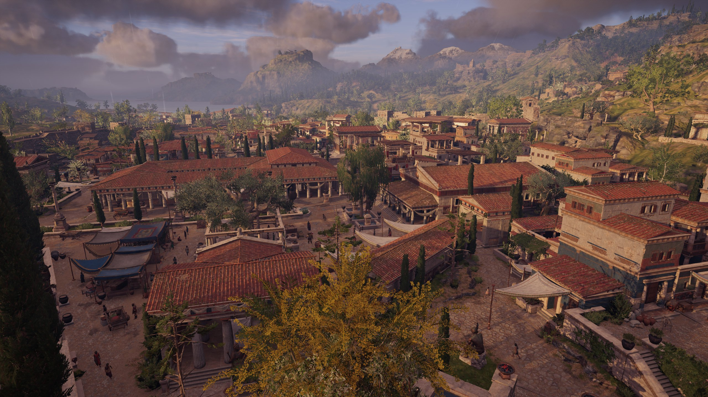
Wizualizacja przedstawiająca Mykeny
Argolida
To historyczny region we wschodniej części Peloponezu, który ze względu na swoje strategiczne położenie i dostęp do morza stanowił jedno z najważniejszych centrów cywilizacyjnych wczesnej Grecji. Kraina ta, zdominowana przez skaliste wzgórza przeplatane żyznymi dolinami, od tysiącleci przyciągała osadników, stając się miejscem narodzin potężnych ośrodków, z których najbardziej ikonicznym było Argos. To właśnie w Argolidzie, jeszcze przed rozkwitem klasycznych polis, powstały monumentalne centra kultury mykeńskiej, takie jak Mykeny czy Tiryns, słynące z cyklopich murów, które do dziś budzą podziw swoją skalą i kunsztem inżynieryjnym. Argolidę często określano mianem ziemi królewskiej, ponieważ jej historia była nierozerwalnie związana z legendarnymi władcami, a mitologiczne tradycje o Heraklesie czy Agamemnonie nadawały jej rangę miejsca wręcz sakralnego. Miasto Argos, będące głównym ośrodkiem politycznym, przez stulecia rywalizowało ze Spartą o hegemonię na Peloponezie, nieustannie balansując między sojuszami a otwartymi konfliktami, co zmuszało mieszkańców regionu do utrzymywania wysokiej gotowości militarnej. Dzięki bliskości Attyki i głównych szlaków morskich, Argolida była nie tylko twierdzą lądową, ale również ważnym punktem wymiany handlowej i kulturowej, gdzie ścierały się wpływy różnych greckich dialektów oraz idei. Historia tego regionu to doskonały przykład ewolucji od cywilizacji pałacowej epoki brązu do klasycznego systemu miast-państw, w którym pamięć o dawnej świetności zawsze stanowiła fundament tożsamości mieszkańców.
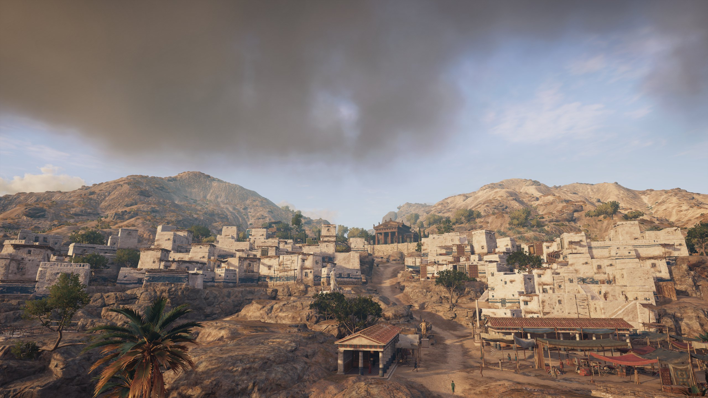
Wizualizacja przedstawiająca Knossos
Kreta
To największa i najbardziej wysunięta na południe grecka wyspa, która w starożytności stanowiła odrębne centrum cywilizacyjne, będące fundamentem dla późniejszej kultury całej Hellady. Dzięki swojemu odizolowanemu położeniu pośrodku szlaków morskich łączących Europę, Azję i Afrykę, wyspa rozwinęła unikalną cywilizację minojską, która już w epoce brązu zadziwiała świat swoim zaawansowaniem technologicznym i przepychem. Sercem Krety był pałac w Knossos, gigantyczny kompleks architektoniczny o skomplikowanym układzie pomieszczeń, który w późniejszych mitach stał się inspiracją dla legendy o labiryncie i uwięzionym w nim Minotaurze. Kreteńczycy, jako wytrawni żeglarze i kupcy, zdominowali handel na Morzu Śródziemnym, tworząc tzw. talassokrację, czyli potęgę opartą na panowaniu nad falami, co zapewniało im dobrobyt i bezpieczeństwo przez wiele stuleci. Wyspa charakteryzowała się górzystym terenem, który w naturalny sposób sprzyjał obronności, oraz bardzo żyznymi nizinami, pozwalającymi na rozwój intensywnego rolnictwa. Mieszkańcy Krety słynęli z zamiłowania do sztuki, co widać w niezwykle barwnych freskach zdobiących pałacowe ściany, przedstawiających sceny z życia codziennego, ceremonie religijne oraz słynne skoki przez byka. Choć po upadku potęgi minojskiej wyspa znalazła się w orbicie wpływów innych greckich ośrodków, zawsze zachowywała swoją specyfikę, a jej bogata mitologia i unikalna kultura stanowiły dla antycznych Greków nieustanne źródło inspiracji oraz dowód na to, że kolebka ich cywilizacji miała swoje korzenie w morskiej potędze minojskich królów.